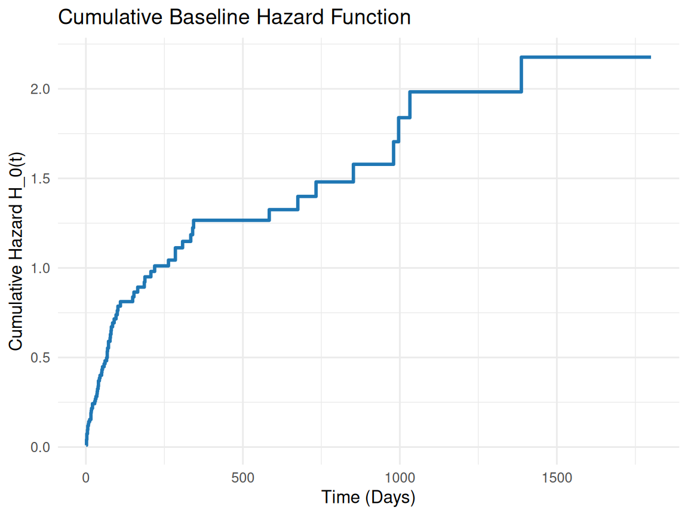
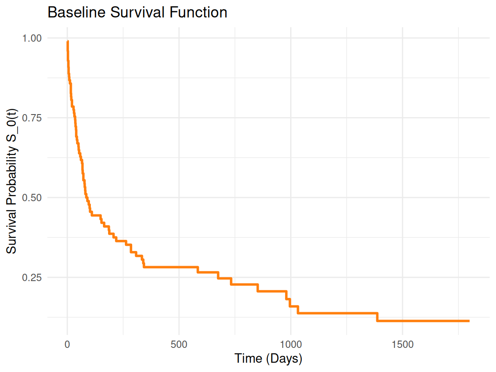
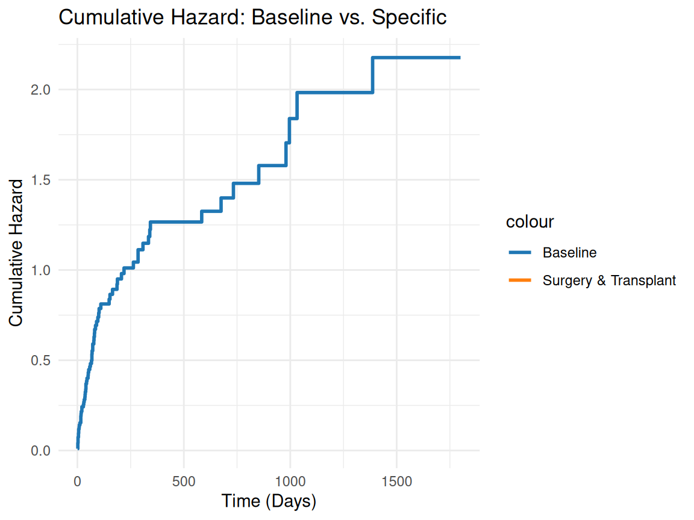
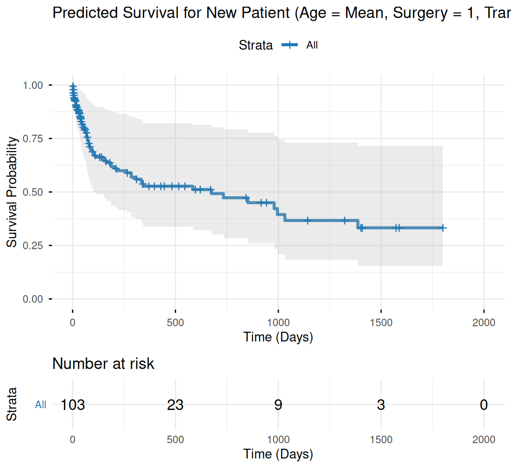

2.2 Survival Analysis with Time-Dependent Covariates
This tutorial explains the concept of time-dependent covariates in survival analysis, why they are important, how to implement them, and the assumptions involved. It also provides practical examples and code snippets in R.
Overview
Time-dependent covariates (also called time-varying covariates) are predictor variables whose values change over time during the follow-up period of a survival study.
Examples in Practice:
Medical: Blood pressure, CD4 count, treatment status (started/stopped during study)
Engineering: Temperature, stress levels, maintenance status of equipment
Economics: Employment status, income level, policy changes
Social Sciences: Marital status, education level, behavioral changes
Standard vs. Time-Dependent Approach:
Standard Survival Analysis
Time-Dependent Survival Analysis
Uses baseline values only
Uses current values at time t
Assumes covariates are fixed
Allows covariates to evolve
May introduce bias if values change
Provides more accurate risk assessment
Why Do We Need Time-Dependent Covariates?
Problem with Fixed Covariates: Imagine studying the effect of blood pressure on heart attack risk:
Patient A has BP = 120/80 at baseline but develops hypertension (160/100) after 6 months
Standard analysis would still classify them as “low risk” based on baseline
Reality: Their risk increased when BP rose
Solution: Time-dependent covariates allow the hazard at time t to depend on the current value of the covariate at that exact time.
Mathematical Framework
Standard Cox Model:
\[
h(t \mid X) = h_0(t) \exp(\beta X)
\] Where \(X\) is fixed for each subject.
Cox Model with Time-Dependent Covariates:
\[
h(t \mid X(t)) = h_0(t) \exp(\beta X(t))
\] Where \(X(t)\) is the value of the covariate at time t.
The hazard ratio compares two individuals at the same time point t, using their current covariate values at that time.
Data Structure: Start-Stop Format
To implement time-dependent covariates, data must be structured in “start-stop” (or counting process) format:
ID
tstart
tstop
event
covariate
1
0
30
0
0
1
30
75
1
1
2
0
45
0
0
2
45
120
0
1
Rules:
Each row represents a time interval[tstart, tstop)
Covariate values are constant within each interval
Event occurs at the end of the interval where event = 1
Multiple rows per subject are allowed
Implementation Approaches
1. True Time-Dependent Covariates
Covariate values actually change during follow-up
Example: Lab measurements, treatment initiation
Requires data restructuring into start-stop format
2. Time-Transformed Covariates (for PH violation)
Create interaction terms like covariate × log(time)
Used when proportional hazards assumption is violated
Doesn’t require new data structure
3. Cumulative Covariates
Use running averages or cumulative exposure
Example: Total drug dose received up to time t
Important Assumptions and Considerations
Valid Assumptions:
No future knowledge: Covariate at time t depends only on information available at or before t
Accurate timing: Change points are recorded precisely
PH assumption: Still applies to the time-dependent coefficients
Common Pitfalls:
1. Immortal Time Bias
Wrong: Assign treatment status based on future events
Right: Treatment status can only change based on past/current information
2. Informative Censoring
If covariate measurement stops when patient deteriorates, this creates bias
Missing data should be handled appropriately (e.g., last observation carried forward)
3. Over-splitting
Too many intervals can lead to computational issues
Balance between accuracy and practicality
Practical Example
Scenario: Cancer Treatment Study
Patients may start chemotherapy during follow-up
We want to estimate the effect of being on chemo at time t
Data Structure:
Patient
tstart
tstop
Death
Chemo
A
0
60
0
0
A
60
120
1
1
B
0
90
0
0
B
90
180
0
1
Interpretation:
Hazard ratio for chemo represents the instantaneous risk of death for someone currently on chemo vs. currently not on chemo, at the same time point
When NOT to Use Time-Dependent Covariates
When covariates are truly fixed (e.g., genetic markers, sex, baseline age)
When change points are unknown or poorly recorded
When the primary interest is baseline risk prediction rather than dynamic risk assessment
Advantages and Benefits
Advantages:
More realistic modeling of real-world processes
Reduced bias from misclassifying time-varying exposures
Better risk prediction for clinical decision-making
This tutorial uses real data from the Primary Biliary Cirrhosis (PBC) study and demonstrates how to handle time-dependent covariates using the tmerge() function in R.
Install Required R Packages
Following R packages are required to run this notebook. If any of these packages are not installed, you can install them using the code below:
We’ll use the Stanford Heart Transplant dataset (built into the survival package as heart). This dataset tracks patients waiting for heart transplants. Key features:
It includes time-dependent covariates like transplant (0 = no transplant, 1 = transplant received, which changes over time for some patients).
The data is already in counting process format: each row represents an interval with start (start time of interval), stop (end time of interval), and event (1 if event occurred at end of interval, 0 otherwise).
Other covariates: age (age at entry), year (year of acceptance), surgery (prior surgery: 0/1).
Event: Death or censoring.
There are 103 observations from 69 patients (some have multiple rows due to time-dependent changes).
This dataset is ideal because the transplant status is time-dependent—patients start without a transplant, and some receive one later, splitting their survival time into pre- and post-transplant intervals.
Warning in data(pbcseq): data set 'pbcseq' not found
Code
# Inspect pbcseqhead(pbcseq)
id futime status trt age sex day ascites hepato spiders edema bili chol
1 1 400 2 1 58.76523 f 0 1 1 1 1 14.5 261
2 1 400 2 1 58.76523 f 192 1 1 1 1 21.3 NA
3 2 5169 0 1 56.44627 f 0 0 1 1 0 1.1 302
4 2 5169 0 1 56.44627 f 182 0 1 1 0 0.8 NA
5 2 5169 0 1 56.44627 f 365 0 1 1 0 1.0 NA
6 2 5169 0 1 56.44627 f 768 0 1 1 0 1.9 NA
albumin alk.phos ast platelet protime stage
1 2.60 1718 138.0 190 12.2 4
2 2.94 1612 6.2 183 11.2 4
3 4.14 7395 113.5 221 10.6 3
4 3.60 2107 139.5 188 11.0 3
5 3.55 1711 144.2 161 11.6 3
6 3.92 1365 144.2 122 10.6 3
Prepare Data for Time-Dependent Analysis
The heart data is already in the required format for time-dependent Cox models:
Use Surv(start, stop, event) in the model formula to handle intervals.
This format allows the model to account for covariate changes at specific times.
If your own data isn’t in this format, you’d need to reshape it using functions like tmerge() from the survival package to create start-stop intervals based on time-varying covariates.
The tmerge() function is used to create a dataset suitable for time-dependent Cox models by merging baseline data with time-varying covariate data. For example, if you had a long-format dataset with time points where covariates change, tmerge() can merge baseline data with time-dependent data:
# Hypothetical example (not needed for 'heart')tdc_data <-tmerge(data1 = baseline, data2 = time_dep, id = id, tstart =0, tstop = time)
Fit Cox Model with Time-Dependent Covariates
The Cox proportional hazards model extends to time-dependent covariates naturally in the counting process format. Fit a model including fixed covariates (age, surgery) and time-dependent (transplant):
Code
# Fit the Cox modelcox_model <-coxph(Surv(start, stop, event) ~ age + surgery + transplant, data = heart)# Print summarysummary(cox_model)
Call:
coxph(formula = Surv(start, stop, event) ~ age + surgery + transplant,
data = heart)
n= 172, number of events= 75
coef exp(coef) se(coef) z Pr(>|z|)
age 0.03054 1.03101 0.01389 2.198 0.0279 *
surgery -0.77333 0.46147 0.35967 -2.150 0.0315 *
transplant1 0.01610 1.01623 0.30859 0.052 0.9584
---
Signif. codes: 0 '***' 0.001 '**' 0.01 '*' 0.05 '.' 0.1 ' ' 1
exp(coef) exp(-coef) lower .95 upper .95
age 1.0310 0.9699 1.003 1.0595
surgery 0.4615 2.1670 0.228 0.9339
transplant1 1.0162 0.9840 0.555 1.8606
Concordance= 0.6 (se = 0.036 )
Likelihood ratio test= 10.72 on 3 df, p=0.01
Wald test = 9.68 on 3 df, p=0.02
Score (logrank) test = 10 on 3 df, p=0.02
Interpretation
age: Positive coefficient means older age increases hazard (risk of death) by about 3% per year (exp(coef) ≈ 1.03). surgery: Negative coefficient indicates prior surgery reduces hazard by about 66% (exp(coef) ≈ 0.34), significant (p=0.012). transplant: Not significant but negative coef suggests transplant might slightly reduce hazard.
The model accounts for transplant changing over time.
Proportional Hazards Assumption
Check proportional hazards assumption (should be non-significant for validity):
Code
cox.zph(cox_model)
chisq df p
age 0.8954 1 0.34
surgery 0.0968 1 0.76
transplant 0.1283 1 0.72
GLOBAL 1.3793 3 0.71
If p-values are low, the assumption may be violated—consider stratifying or extending the model.
Model Diagnostics and Interpretation
Hazard Ratios: From exp(coef), interpret as multiplicative effect on hazard rate.
Confidence Intervals: Use confint(cox_model).
Predict Survival: For new data, use survfit(cox_model, newdata = ...).
For time-dependent models, predictions are trickier because survival curves depend on when the covariate changes. You can simulate scenarios:
Code
# Hypothetical new patient: age 0 (mean), no surgery, transplant at day 50new_data <-data.frame(start =c(0, 50), stop =c(50, Inf),event =0, age =0, surgery =0, transplant =c(0, 1))# But for prediction, use survfit with type="surv"
Estimate Cumulative Baseline Hazard
The basehaz() function extracts the cumulative baseline hazard function $ H_0(t $. By default, it assumes covariates are centered (mean = 0 for continuous covariates like age).
Code
# Estimate cumulative baseline hazardbaseline_hazard <-basehaz(cox_model, centered =TRUE)# View the first few rowshead(baseline_hazard)
Interpretation: $ H_0(t) $ is the expected number of events (e.g., deaths) by time $ t $ for a reference individual (covariates = 0). For example, at time = 15, if hazard = 0.040615, the cumulative risk of the event is low for the baseline group.
Time-Dependent Covariates: The transplant covariate’s time-dependent nature is handled in the model’s likelihood, so the baseline hazard assumes transplant = 0 (no transplant) unless specified otherwise.
Relation to Survival: The baseline survival function is \(S_0(t) = \exp(-H_0(t))\). We can compute this if needed.
To visualize \(H_0(t)\), we can plot it against time using ggplot2 for clarity. The cumulative hazard typically increases over time, with steps at each event.
Warning: Using `size` aesthetic for lines was deprecated in ggplot2 3.4.0.
ℹ Please use `linewidth` instead.

Compute Baseline Survival
If you want the baseline survival function $S_0(t) = (-H_0(t)) $:
Code
# Add survival probabilitybaseline_hazard$survival <-exp(-baseline_hazard$hazard)# Plot survivalggplot(baseline_hazard, aes(x = time, y = survival)) +geom_step(color ="#FF7F0E", size =1) +labs(title ="Baseline Survival Function",x ="Time (Days)",y ="Survival Probability S_0(t)") +theme_minimal()

Cumulative hazard for a specific patient
To estimate the cumulative hazard for a specific patient (e.g., age = mean, surgery = 1, transplant = 1), use the model’s coefficients:
Code
# Extract coefficientscoef <-coef(cox_model)# Hazard for specific covariates: H(t) = H_0(t) * exp(beta_age * age + beta_surgery * surgery + beta_transplant * transplant)baseline_hazard$hazard_specific <- baseline_hazard$hazard *exp(coef["age"] *0+ coef["surgery"] *2+ coef["transplant"] *2)# Plotggplot(baseline_hazard, aes(x = time)) +geom_step(aes(y = hazard, color ="Baseline"), size =1) +geom_step(aes(y = hazard_specific, color ="Surgery & Transplant"), size =1) +labs(title ="Cumulative Hazard: Baseline vs. Specific",x ="Time (Days)",y ="Cumulative Hazard") +scale_color_manual(values =c("Baseline"="#1F77B4", "Surgery & Transplant"="#FF7F0E")) +theme_minimal()
Warning: Removed 111 rows containing missing values or values outside the scale range
(`geom_step()`).

Predict Survival for a New Patient
To predict survival for a new patient with specific covariates (e.g., age = mean, surgery = 1, transplant = 1), use the survfit() function:
Code
# New patient datanew_patient <-data.frame(age =0, surgery =1, transplant =1)# Predict survival curve for the new patientsurv_pred <-survfit(cox_model, newdata = new_patient)
Warning in model.frame.default(data = structure(list(age = 0, surgery = 1, :
variable 'transplant' is not a factor
Code
# Plot survival curve using ggsurvplotggsurvplot( surv_pred,data = new_patient,conf.int =TRUE, # Include confidence intervalspalette ="#1F77B4", # Blue color for the curvexlab ="Time (Days)",ylab ="Survival Probability",title ="Predicted Survival for New Patient (Age = Mean, Surgery = 1, Transplant = 1)",ggtheme =theme_minimal(), # Clean themerisk.table =TRUE, # Add risk tablerisk.table.height =0.25, # Adjust table heightlinetype ="solid", # Solid line for the curvesize =1.2# Line thickness)
Ignoring unknown labels:
• fill : "Strata"
Ignoring unknown labels:
• fill : "Strata"
Ignoring unknown labels:
• fill : "Strata"
Ignoring unknown labels:
• fill : "Strata"
Ignoring unknown labels:
• colour : "Strata"

Summary and Conclusion
The cumulative baseline hazard $ H_0(t) $ is estimated using basehaz() from the fitted Cox model. It’s a step function that increases at event times and forms the basis for predicting hazards for any covariate combination. The heart dataset’s time-dependent structure is handled seamlessly in the Cox model. Use the visualizations to interpret how risk accumulates, and adjust for specific covariates as needed. Time-dependent covariates allow for more realistic modeling of changing risk factors over time, improving the validity and applicability of survival analysis in many fields.